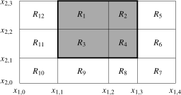

Proposition 10.1.2.
Suppose is a closed rectangle and is a bounded function. Let be such that for all we have Then for every partition of
Jiří Lebl, Basic Analysis I–II, version 6.3. Free author edition of this section. Selection and attribution · Notation.
L10.1.2: Full Darboux bounds, with the used volume exercise now proved.
L10.1.5: Both refinement inequalities; upper half is P17.1.
L10.1.6: Complete common-refinement proof of lower <= upper integral and volume bounds.
L10.1.12: Both directions of the small-gap criterion with supremum/infimum operations explicitly available.
L10.1.13: Restriction to a subrectangle including the locally supplied degenerate cases.
L10.1.14: Full rectangle-diameter inequality.
L10.1.15: Complete continuous-integrability argument, with its fine-grid and zero-case omissions supplied.
L10.1.19: Independence of support-containing rectangle, with the exact zero-extension exercise and empty-support case supplied in P17.3.
![A diagram of a divided rectangle as the previous one with extra marks. There are two more vertical cuts and one horizontal one marked in dashed line, now dividing the rectangle into 20 smaller rectangles labeled R tilde sub 1 through R tilde sub 20 in no particular order. The vertices on the horizontal and the vertical axis are marked similarly to before but now with x tilde sub 1,0 through x tilde sub 1,5 and x tilde sub 2,0 through x tilde sub 2,4 in order. On the old cuts both the old and new markings are shown, so for example x sub 1,2 has also the mark x tilde sub 1,3.](figures/figrectpart-mbxpdft.svg)
